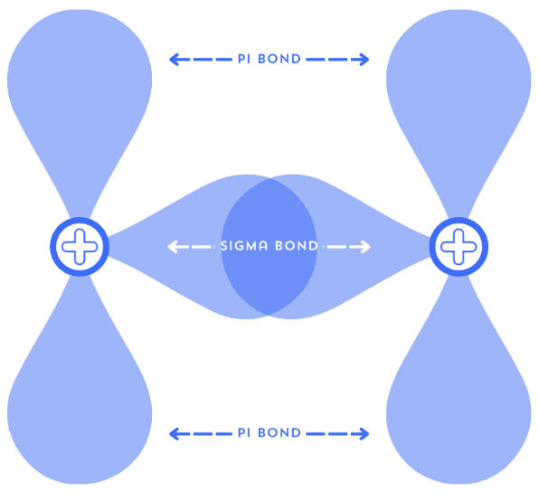

Geometry of a Bond
Recall your knowledge from 1.4 The Shape of Orbitals, because we will now discuss when orbitals interact to form bonds. After learning that atomic orbitals can combine to form bonding and antibonding molecular orbitals, ask yourself, “how do two orbitals overlap in space?”
We will discuss σ and π bonds, review single, double, and triple bonds in the electron pair mindset, and then explain what this means in the terms of orbitals.
1. Head-on collision: σ Bonds
Consider two atoms approaching one another such that their nuclei are on the same moving axis. When their orbitals overlap along the “internuclear axis,” we call it a head-on overlap. The resulting molecular orbital has its electron density strengthened between the two nuclei, and can be considered cylindrically symmetrical to the two atoms.
This is a sigma (σ) bond. The orbitals are directly between the nuclei, producing a bonding molecular orbital. Note that a σ bonding interaction can occur from any type of orbitals that overlap along the internuclear axis. This can include s-s, s-p, p-p, and other orbital combinations, provided their orientations and symmetries allow the appropriate overlap.
A σ molecular orbital has cylindrical symmetry around the internuclear axis and does not have a two dimensional plane where electrons cannot be found, called a nodal plane, containing that axis.
2. Side-by-side overlap: π bonds
Now imagine two p orbitals parallel to each other but not quite colliding, they are perpendicular to the axis connecting the nuclei. Instead of a direct head-on overlap, they overlap sideways. Imagine the two p orbitals stretching out to each other to form a bond (note that this is not what actually happens, but helps to visualize).
This is a pi (π) bond. The resulting π bond has electron density on opposite sides of the internuclear axis rather than being concentrated along the axis itself. Therefore, a π bond has different geometry than a σ bond.
A π molecular orbital has electron density on opposite sides of the internuclear axis and has a nodal plane containing that axis. For comparable orbital interactions, π overlap is generally weaker than σ overlap because side-by-side overlap is less effective than head-on overlap.

3. Single, double, and triple bonds, but in orbital terms.
Let’s quickly review what these words mean in electron pair terms first. Recall that single bonds are when two atoms share one pair of electrons, or two electrons all together. Double bonds share two pairs, and triple bonds share three pairs.
So how do σ and π bonds connect to this? Well, let’s consider hydrogen gas and its singular bond, H-H. Instead of electron pairs, imagine the hydrogen atoms in their electron density form, and focus on how their orbitals overlap head-on to form a σ bond. See it? A single covalent bond consists of exactly one σ bond, or one head-on overlap between their orbitals.
Although this is the simplest example of two s orbitals overlapping with each other, do remember that a σ bond can come from any orbital as long as it is a head-on overlap. In a future topic, we will even discuss hybridized orbitals and how they can form bonds as well.
Double and triple bonds are a little less intuitive to visualize, so you’ll have to bear with me. A double bond consists of one σ bond and one π bond. In the usual description of a bond between two atoms, only one σ bond can exist between the same pair of nuclei because there is only one internuclear axis. This means that the only other bonds possible are π bonds, which do not require a direct overlap to form.
You can probably guess what triple bonds consist of then, one σ bond, and two π bonds. Although quadruple bonds are possible in chemistry, they are very complex, and introduce a new kind of bond called delta (δ) bonds. For simplicity, we will not go further than this, as δ bonds are rare and difficult to understand at this level.
We will look at triple bonds again in a future lesson, where we discuss the topic of hybridization.